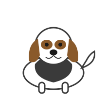
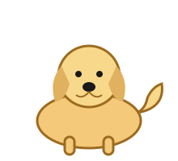
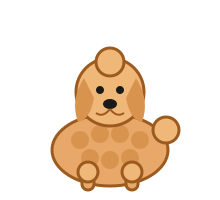

Beagle
- Size: Small. About 33-41 cm tall, 9-11 kg.
- Personality: Friendly, curious, and good with kids.
- Everyday care: Needs daily walks and loves to sniff. Keep it on a leash outside.
Welcome to the Virtual Dog Park! Meet three friendly dog breeds in our encyclopedia, then adopt a virtual puppy and take care of it every day.
Three popular breeds. Each card shows size, personality, and everyday care.


